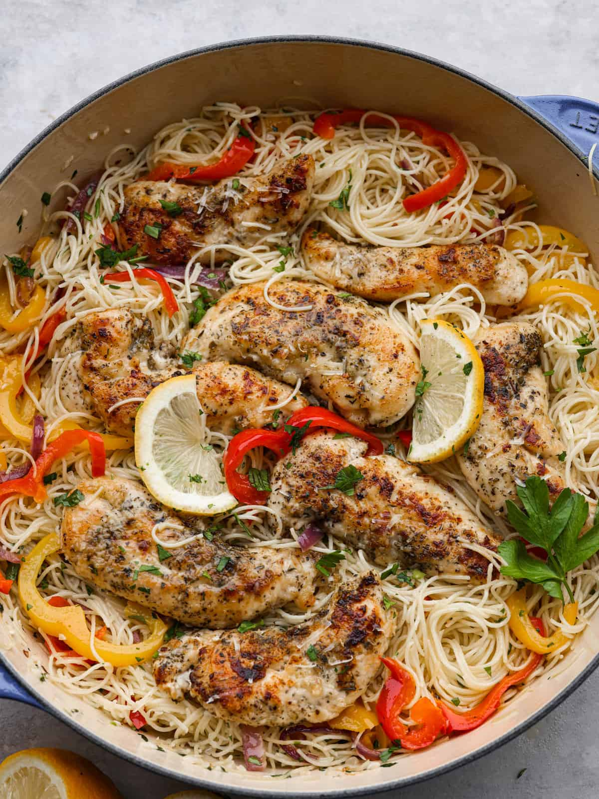

Chicken Scampi

Description
Chicken scampi is a flavorful dish featuring tender chicken sautéed in a buttery garlic sauce,
often with white wine, lemon juice, and parsley. Typically served over pasta or with crusty
bread, it combines savory and zesty elements, making it a delightful meal that's both comforting
and elegant.
Ingredients:
- Chicken breasts (1 pound, boneless and skinless, sliced)
- Olive oil (2 tablespoons)
- Butter (4 tablespoons)
- Garlic (4 cloves, minced)
- White wine (½ cup, optional)
- Lemon juice (from 1 lemon)
- Chicken broth (½ cup)
- Red pepper flakes (¼ teaspoon, optional)
- Fresh parsley (¼ cup, chopped)
- Salt and pepper (to taste)
- Pasta (such as linguine or spaghetti, optional)
- Grated Parmesan cheese (for serving, optional)
Steps:
-
If you’re serving with pasta, cook according to package instructions. Drain and set aside.
-
In a large skillet, heat olive oil over medium-high heat. Season the chicken with salt and
pepper, then add to the skillet. Cook until golden brown and cooked through, about 5-7
minutes. Remove chicken from the skillet and set aside.
-
In the same skillet, melt the butter. Add minced garlic and red pepper flakes (if using)
and sauté for about 1 minute until fragrant.
-
Pour in the white wine (if using) and lemon juice. Allow it to simmer for a few minutes to
reduce slightly. Add the chicken broth and simmer for another 2-3 minutes.
-
Return the cooked chicken to the skillet, tossing to coat in the sauce. Stir in chopped
parsley and adjust seasoning with salt and pepper.
-
If using pasta, add it to the skillet and toss to combine. Serve hot, garnished with extra
parsley and grated Parmesan cheese if desired.
Enjoy your dlicious chicken scampi!